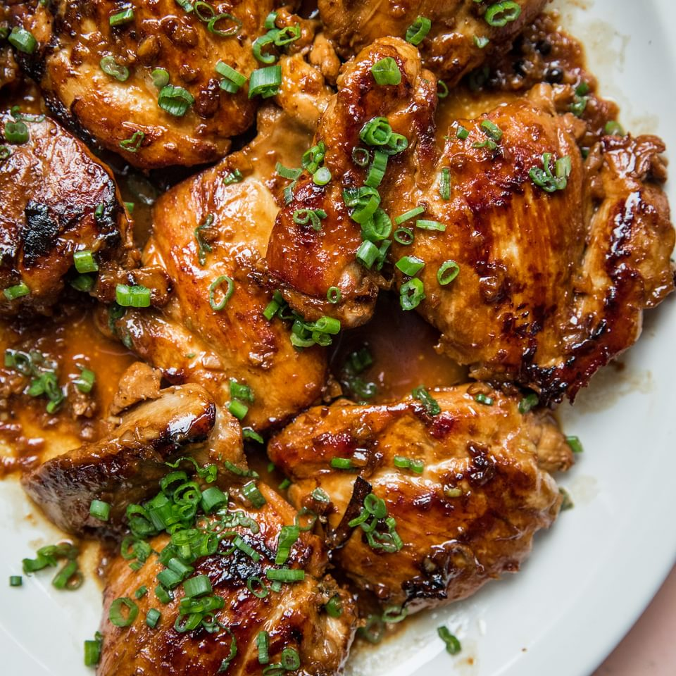

Adobo

Description
Ingredients
- 3/4 distilled white vinegar
- 1/2 tablspoon black peppercorns
Steps
-
Combine chicken, vinegar, soy sauce, ginger, peppercorns, garlic, and
bay leaves in a Dutch oven; bring to a boil over medium heat. Reduce
heat, cover, and simmer for 30 minutes, basting chicken occasionally
with the sauce.
-
Remove the lid and continue to simmer until liquid has reduced by half,
5 to 10 minutes. An instant-read thermometer inserted near the bone
should read 165 degrees F (74 degrees C).
-
Transfer chicken to a serving plate. Strain liquid from the pot to
remove bay leaves and other solids.
- Serve chicken hot and drizzle with strained sauce.
Return to Home Page